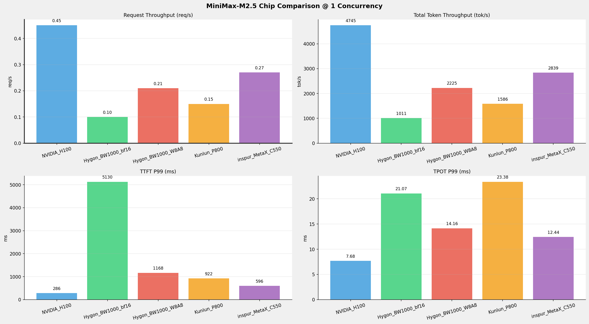
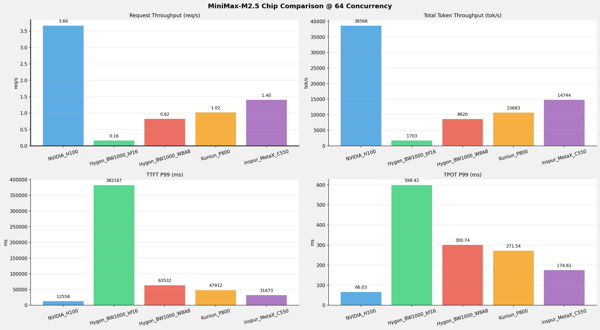
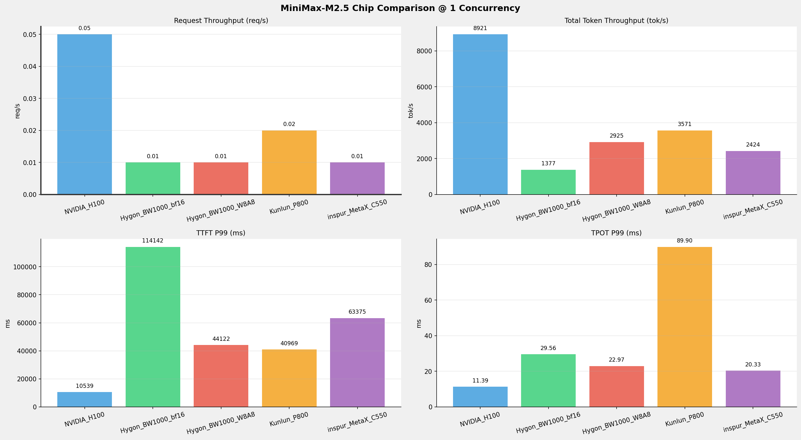
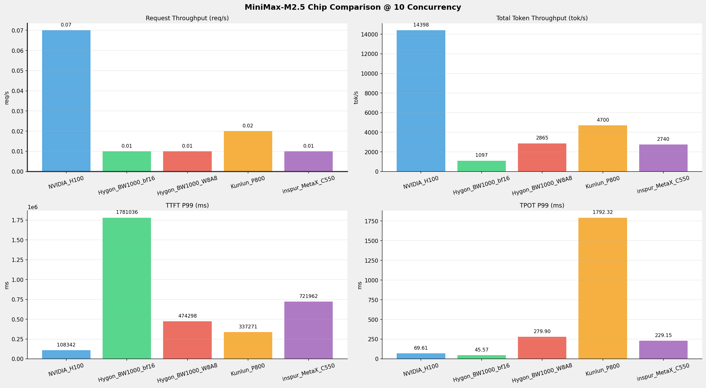

| 组件 \ 规格 | 英伟达 | 海光 | 昆仑芯 | 沐曦 | 备注 |
|---|---|---|---|---|---|
| 节点数量 | 1 台 | 1 台 | 1台 | 1 台 | 确认 |
| 芯片型号 | H100 | BW1000 | P800 OAM | MetaX-C550 | 确认 |
| 芯片数量 | 8 张 | 8 张 | 8 张 | 8 张 | 确认 |
| 单卡算力 FP16/BF16 | 1979 TFLOPS （官方理论值） | 待确认 | 待确认 | 待确认 | ⚠️ 待确认 |
| 单卡算力 FP32 | 67 TFLOPS （官方理论值） | 待确认 | 待确认 | 待确认 | ⚠️ 待确认 |
| 单卡算力 FP64 | 34 TFLOPS （官方理论值） | 待确认 | 待确认 | 待确认 | ⚠️ 待确认 |
| 单卡显存 | 80GB | 64GB | 96GB | 64GB | 确认 |
| 显存类型 | HBM3 | 待确认 | 待确认 | HBM2e | ⚠️ 待确认 |
| 显存带宽 | 3.35 TB/s | 待确认 | 待确认 | 待确认 | ⚠️ 待确认 |
| 单卡功耗 | 700 W | 200 W | 400 W | 450 W | 确认 |
| 卡间互联 | NVLink 4.0 | HSM | XPULink (XL) + PCIe Gen4 x16（跨 NUMA 显示 SYS） | MetaXLink | 确认 |
| CPU | Intel(R) Xeon(R) Platinum 8468 (192核) | Hygon C86 (128核) | Intel Xeon Platinum 8563C (208核) | Intel(R) Xeon(R) Platinum 8480+ (224核) | 确认 |
| 系统内存 | 2.0 TiB | 503 GiB | 2.0 TiB | 1.8 TiB | 确认 |
| 本地存储 | 894GB 系统盘 + 7TB*4 缓存盘 + 7TB 容器盘 + 25TB 扩展盘 | 437G系统盘 + 1.7TiB (G73M1T9R-C-GD308) | 446.6G + NVMe 4 x 3.5T (Intel SSDPF2KX038T1) | 446.6GB + NVMe 4 x 7T | 确认 |
| 组件\版本 | 英伟达 | 海光 | 昆仑芯 | 沐曦 | 说明 |
|---|---|---|---|---|---|
| 操作系统 | Ubuntu 22.04.5 LTS | Ubuntu 22.04.5 LTS | Ubuntu 22.04.5 LTS | Ubuntu 20.04.1 | 芯片所在物理机系统 |
| 显卡驱动 | 570.133.20/580.126.09 | 6.3.22-V1.2.0 | Kunlun / XPU Driver 5.0.21.26 | Kernel Mode Driver Version: 3.6.11 | 驱动信息 |
| Toolkit | release 12.9 | DTK-26.04-beta-0130-ubuntu20.04 | XPU Container Runtime Hook version 1.0.5 | MACA Version: 3.5.3.23 | CUDA Toolkit版本 |
| Docker | - | 28.0.4 | 28.4.0 | 28.1.1 | 容器运行时 |
| containerd | 2.2.0 | 2.1.1 | 1.7.28 | - | K8S 容器运行时（CRI） |
| Kubernetes | 1.34.2 | 1.33 | v1.28.2 | - | 单节点 All-in-One 部署 |
| Device Plugin | 0.14.5 | v2.4.0 | xpu-device-plugin v5.0.0-alpha.2 | - | K8S GPU 资源管理 |
| 多卡通信库 | NCCL | DTK内置RCCL | 无单独查询版本 | MCCLl | 多卡通信库 |
| 平台类别 | 部署方式 |
|---|---|
| NVIDIA_H100 | K8S部署 |
| Hygon_BW1000 | Docker容器部署 |
| Kunlun_P800 | Docker容器部署 |
| MetaX_C550 | Docker容器部署 |
| 参数名称 | NVIDIA_H100 | Hygon_BW1000 | Hygon_BW1000 | Kunlun_P800 | MetaX_C550 |
|---|---|---|---|---|---|
| model_name | MiniMax-M2.5 | MiniMax-M2.5-bf16 | MiniMax-M2.5-W8A8 | MiniMax-M2.5-W8A8-INT8-Dynamic | MiniMax-M2.5-W8A8 |
| quantization_config | FP8 | bf16 | int-8 | int-8 | int-8 |
| model_size | 215G | 427G | 215G | 215G | 215G |
| max_position_embeddings | 196608 | 196608 | 196608 | 196608 | 196608 |
| temperature | 1.0 | N/A | N/A | 1.0 | N/A |
| top_k | 40 | N/A | N/A | 40 | 40 |
| top_p | 0.95 | N/A | N/A | 0.95 | 0.95 |
| transformers_version | 4.46.1 | 4.46.1 | 4.57.6 | 4.46.1 | 4.57.6 |
| vllm_version | 0.20.0 | 0.11.0+das.opt1.rc2.dtk2604.20260128.g0bf89b0c | 0.15.1+das.opt1.alpha.dtk2604 | 0.11.0 | - |
| sglang_version | - | - | - | - | 0.5.9+maca3.5.3.204 |
| python_version | 3.12.3 | 3.10.12 | 3.10.12 | 3.10.10 | 3.10.12 |
| 参数名称 | NVIDIA_H100 | Hygon_BW1000 | Hygon_BW1000 | Kunlun_P800 | MetaX_C550 |
|---|---|---|---|---|---|
| Model Name | MiniMax-M2.5 | MiniMax-M2.5-bf16 | MiniMax-M2.5-W8A8 | MiniMax-M2.5-W8A8-INT8-Dynamic | MiniMax-M2.5-W8A8 |
| Max Model Len | 196608 | 196608 | 196608 | 196608 | 196608 |
| Max Num Seqs | 64 | 64 | 64 | 64 | 64 |
| Max Num Batched Tokens | 8192 | default | default | 8192 | - |
| Block Size | default | default | default | 128 | - |
| Gpu Memory Utilization | 0.85 | 0.9 | 0.9 | 0.95 | 0.9 |
| Compilation Config | - | - | - | {"splitting_ops":["vllm.unified_attention", "vllm.unified_attention_with_output", "vllm.unified_attention_with_output_kunlun", "vllm.mamba_mixer2", "vllm.mamba_mixer", "vllm.short_conv", "vllm.linear_attention", "vllm.plamo2_mamba_mixer", "vllm.gdn_attention", "vllm.sparse_attn_indexer", "vllm.sparse_attn_indexer_vllm_kunlun"]} | - |
| Dtype | default | bfloat16 | bfloat16 | auto | - |
| Dp | 1 | 1 | 1 | 1 | 1 |
| Tp | 8 | 8 | 8 | 8 | 8 |
| Pp | 1 | 1 | 1 | 1 | 1 |
| Reasoning Parser | minimax_m2 | minimax_m2 | minimax_m2 | minimax_m2 | minimax |
| Tool Call Parser | minimax_m2 | minimax_m2 | minimax_m2 | minimax_m2 | minimax-m2 |
| Enable Auto Tool Choice | True | True | True | True | True |
| Enable Export Parallel | True | True | True | False | - |
各芯片平台的Minimax_M2.5模型的详细部署脚本参见本文档的《附录一》
| 项目 | 配置 | 备注 |
|---|---|---|
| 数据集 | random | |
| 并发数 | 1, 64 | |
| 总请求数 | 320 | |
| 请求输入上下文长度 | 10240（10k） | |
| 请求输出上下文长度 | 256（0.25k） | |
| 被测芯片和模型 | NVIDIA_H100：MiniMax-M2.5-FP8 Hygon_BW1000: MiniMax-M2.5-bf16 Hygon_BW1000: MiniMax-M2.5-W8A8 Kunlun_P800: MiniMax-M2.5-W8A8-INT8-Dynamic inspur_MetaX_C550: MiniMax-M2.5-W8A8 |
1并发

64并发

| 并发数 | NVIDIA_H100(基准) | Hygon_BW1000_bf16 | 相对基准 | Hygon_BW1000_W8A8 | 相对基准 | Kunlun_P800 | 相对基准 | inspur_MetaX_C550 | 相对基准 |
|---|---|---|---|---|---|---|---|---|---|
| 1 | 0.45 | 0.10 | -77.8% | 0.21 | -53.3% | 0.15 | -66.7% | 0.27 | -40.0% |
| 64 | 3.66 | 0.16 | -95.6% | 0.82 | -77.6% | 1.02 | -72.1% | 1.40 | -61.7% |
| 并发数 | NVIDIA_H100(基准) | Hygon_BW1000_bf16 | 相对基准 | Hygon_BW1000_W8A8 | 相对基准 | Kunlun_P800 | 相对基准 | inspur_MetaX_C550 | 相对基准 |
|---|---|---|---|---|---|---|---|---|---|
| 1 | 115.31 | 24.66 | -78.6% | 54.28 | -52.9% | 37.20 | -67.7% | 69.26 | -39.9% |
| 64 | 937.16 | 41.54 | -95.6% | 210.25 | -77.6% | 253.92 | -72.9% | 359.62 | -61.6% |
| 并发数 | NVIDIA_H100(基准) | Hygon_BW1000_bf16 | 相对基准 | Hygon_BW1000_W8A8 | 相对基准 | Kunlun_P800 | 相对基准 | inspur_MetaX_C550 | 相对基准 |
|---|---|---|---|---|---|---|---|---|---|
| 1 | 4745.14 | 1010.87 | -78.7% | 2225.40 | -53.1% | 1585.87 | -66.6% | 2839.48 | -40.2% |
| 64 | 38566.45 | 1702.94 | -95.6% | 8620.30 | -77.6% | 10682.97 | -72.3% | 14744.38 | -61.8% |
| 并发数 | NVIDIA_H100(基准) | Hygon_BW1000_bf16 | 相对基准 | Hygon_BW1000_W8A8 | 相对基准 | Kunlun_P800 | 相对基准 | inspur_MetaX_C550 | 相对基准 |
|---|---|---|---|---|---|---|---|---|---|
| 1 | 286.01 | 5130.17 | +1693.7% | 1168.49 | +308.5% | 921.76 | +222.3% | 596.38 | +108.5% |
| 64 | 12557.76 | 382166.79 | +2943.3% | 63531.55 | +405.9% | 47912.19 | +281.5% | 31672.66 | +152.2% |
| 并发数 | NVIDIA_H100(基准) | Hygon_BW1000_bf16 | 相对基准 | Hygon_BW1000_W8A8 | 相对基准 | Kunlun_P800 | 相对基准 | inspur_MetaX_C550 | 相对基准 |
|---|---|---|---|---|---|---|---|---|---|
| 1 | 7.68 | 21.07 | +174.3% | 14.16 | +84.4% | 23.38 | +204.4% | 12.44 | +62.0% |
| 64 | 66.03 | 598.42 | +806.3% | 300.74 | +355.5% | 271.54 | +311.2% | 174.61 | +164.4% |
| 并发数 | NVIDIA_H100(基准) | Hygon_BW1000_bf16 | 相对基准 | Hygon_BW1000_W8A8 | 相对基准 | Kunlun_P800 | 相对基准 | inspur_MetaX_C550 | 相对基准 |
|---|---|---|---|---|---|---|---|---|---|
| 1 | 8.57 | 32.03 | +273.7% | 20.17 | +135.4% | 24.07 | +180.9% | 14.88 | +73.6% |
| 64 | 170.95 | 160.09 | -6.4% | 64.72 | -62.1% | 635.84 | +271.9% | 57.22 | -66.5% |
| 项目 | 配置 | 备注 |
|---|---|---|
| 数据集 | random | |
| 并发数 | 1, 10 | |
| 总请求数 | 100 | |
| 请求输入上下文长度 | 194560（190k） | |
| 请求输出上下文长度 | 1024（1k） | |
| 被测芯片 | NVIDIA_H100：MiniMax-M2.5-FP8 Hygon_BW1000: MiniMax-M2.5-bf16 Hygon_BW1000: MiniMax-M2.5-W8A8 Kunlun_P800: MiniMax-M2.5-W8A8-INT8-Dynamic inspur_MetaX_C550: MiniMax-M2.5-W8A8 |
1并发

10并发

| 并发数 | NVIDIA_H100(基准) | Hygon_BW1000_bf16 | 相对基准 | Hygon_BW1000_W8A8 | 相对基准 | Kunlun_P800 | 相对基准 | inspur_MetaX_C550 | 相对基准 |
|---|---|---|---|---|---|---|---|---|---|
| 1 | 0.05 | 0.01 | -80.0% | 0.01 | -80.0% | 0.02 | -60.0% | 0.01 | -80.0% |
| 10 | 0.07 | 0.01 | -85.7% | 0.01 | -85.7% | 0.02 | -71.4% | 0.01 | -85.7% |
| 并发数 | NVIDIA_H100(基准) | Hygon_BW1000_bf16 | 相对基准 | Hygon_BW1000_W8A8 | 相对基准 | Kunlun_P800 | 相对基准 | inspur_MetaX_C550 | 相对基准 |
|---|---|---|---|---|---|---|---|---|---|
| 1 | 46.70 | 7.21 | -84.6% | 15.31 | -67.2% | 2.92 | -93.7% | 12.69 | -72.8% |
| 10 | 75.37 | 5.74 | -92.4% | 15.00 | -80.1% | 3.70 | -95.1% | 14.34 | -81.0% |
| 并发数 | NVIDIA_H100(基准) | Hygon_BW1000_bf16 | 相对基准 | Hygon_BW1000_W8A8 | 相对基准 | Kunlun_P800 | 相对基准 | inspur_MetaX_C550 | 相对基准 |
|---|---|---|---|---|---|---|---|---|---|
| 1 | 8921.40 | 1376.58 | -84.6% | 2924.75 | -67.2% | 3571.06 | -60.0% | 2424.14 | -72.8% |
| 10 | 14398.41 | 1096.76 | -92.4% | 2865.09 | -80.1% | 4699.60 | -67.4% | 2739.59 | -81.0% |
| 并发数 | NVIDIA_H100(基准) | Hygon_BW1000_bf16 | 相对基准 | Hygon_BW1000_W8A8 | 相对基准 | Kunlun_P800 | 相对基准 | inspur_MetaX_C550 | 相对基准 |
|---|---|---|---|---|---|---|---|---|---|
| 1 | 10539.10 | 114142.41 | +983.0% | 44121.71 | +318.6% | 40968.87 | +288.7% | 63374.54 | +501.3% |
| 10 | 108342.29 | 1781035.71 | +1543.9% | 474297.92 | +337.8% | 337270.92 | +211.3% | 721962.01 | +566.4% |
| 并发数 | NVIDIA_H100(基准) | Hygon_BW1000_bf16 | 相对基准 | Hygon_BW1000_W8A8 | 相对基准 | Kunlun_P800 | 相对基准 | inspur_MetaX_C550 | 相对基准 |
|---|---|---|---|---|---|---|---|---|---|
| 1 | 11.39 | 29.56 | +159.5% | 22.97 | +101.7% | 89.90 | +689.3% | 20.33 | +78.5% |
| 10 | 69.61 | 45.57 | -34.5% | 279.90 | +302.1% | 1792.32 | +2474.8% | 229.15 | +229.2% |
| 并发数 | NVIDIA_H100(基准) | Hygon_BW1000_bf16 | 相对基准 | Hygon_BW1000_W8A8 | 相对基准 | Kunlun_P800 | 相对基准 | inspur_MetaX_C550 | 相对基准 |
|---|---|---|---|---|---|---|---|---|---|
| 1 | 22.97 | 53.91 | +134.7% | 32.12 | +39.8% | 93.69 | +307.9% | 24.42 | +6.3% |
| 10 | 639.97 | 55.14 | -91.4% | 4012.34 | +527.0% | 2848.90 | +345.2% | 46.84 | -92.7% |
vllm bench serve性能测试脚本见本报告《附录二》
xxxxxxxxxxexport TORCH_CUDA_ARCH_LIST="9.0+PTX"export OMP_NUM_THREADS=8export PYTHONHASHSEED=0export PYTHONUNBUFFERED=1export VLLM_NO_USAGE_STATS=1export VLLM_LOGGING_LEVEL=INFOexport NCCL_IB_DISABLE=0export NCCL_IB_HCA=ib7s400p0,ib7s400p1export NCCL_SOCKET_IFNAME=eth0 #bond0export GLOO_SOCKET_IFNAME=eth0 #bond0MODEL_PATH=/userdata/llms/MiniMax/MiniMax-M2.5MODEL_ID="minimax-m2.5 minmax-m25"API_KEY=abc123#MAX_LEN=$(( 1024 * 196 ))MAX_LEN=196608MAX_SEQ=64MAX_BS=8192DP=1TP=8PP=1CG="$(seq -s ' ' 1 15) $(seq -s ' ' 16 4 31) $(seq -s ' ' 32 8 256)"TAG=$(gen_ofile)log_file=$TAG-tp$TP-pp$PP.logecho log_file: $log_fileexport LMCACHE_USE_EXPERIMENTAL=Trueexport LMCACHE_CONFIG_FILE="/userdata/bin/lmcache_mm25.yaml" set -xvllm serve $MODEL_PATH \ --max-model-len $MAX_LEN \ --max-num-seqs $MAX_SEQ \ --max-num-batched-tokens $MAX_BS \ --trust-remote-code \ --gpu-memory-utilization 0.85 \ --disable-log-requests \ --disable-uvicorn-access-log \ --port 8080 \ --host 0.0.0.0 \ --served-model-name $MODEL_ID \ -dp $DP -tp $TP -pp $PP \ --enable-expert-parallel \ --enable-auto-tool-choice --tool-call-parser minimax_m2 --reasoning-parser minimax_m2 \ --cudagraph-capture-sizes $CG \ 2>&1 | tee -a $log_filexxxxxxxxxxvllm serve /data/models/MiniMax-M2.5-bf16 \ -tp 8 \ --trust-remote-code \ --disable-log-requests \ --port 8080 \ --max-num-seqs 64 \ --max-model-len 196608 \ --gpu-memory-utilization 0.9 \ --dtype bfloat16 \ --served-model-name minimax-m2.5 \ --enable-expert-parallel \ --enable-auto-tool-choice \ --tool-call-parser minimax_m2xxxxxxxxxxvllm serve /data/models/MiniMax-M2.5-W8A8 \ -tp 8 \ --trust-remote-code \ --disable-log-requests \ --port 8080 \ --max-num-seqs 64 \ --max-model-len 196608 \ --gpu-memory-utilization 0.9 \ --dtype bfloat16 \ --served-model-name minimax-m2.5 \ -cc '{"pass_config": {"fuse_act_quant": false}}' \ --enable-auto-tool-choice \ --tool-call-parser minimax_m2xxxxxxxxxxsource /root/miniconda/bin/activate python310_torch25_cudaunset XPU_DUMMY_EVENTexport XPU_VISIBLE_DEVICES=0,1,2,3,4,5,6,7export XPU_USE_FAST_SWIGLU=1export XFT_USE_FAST_SWIGLU=1export XMLIR_CUDNN_ENABLED=1export XPU_USE_DEFAULT_CTX=1export XMLIR_FORCE_USE_XPU_GRAPH=1export XMLIR_ENABLE_MOCK_TORCH_COMPILE=falseexport VLLM_USE_V1=1export USE_ORI_ROPE=1export VLLM_USE_TRITON_FLASH_ATTN=export VLLM_ATTENTION_BACKEND=FLASH_ATTNexport VLLM_KUNLUN_DISABLE_TRITON=1export XMLIR_MATMUL_FAST_MODE=1python -m vllm.entrypoints.openai.api_server \ --host 0.0.0.0 \ --port 8080 \ --model /data/MiniMax-M2.5-W8A8-INT8-Dynamic \ --served-model-name minimax-m2.5 \ --gpu-memory-utilization 0.95 \ --trust-remote-code \ --max-model-len 196608 \ --tensor-parallel-size 8 \ --dtype auto \ --max_num_seqs 64 \ --max_num_batched_tokens 8192 \ --block-size 128 \ --distributed-executor-backend mp \ --enable-auto-tool-choice \ --tool-call-parser minimax_m2 \ --reasoning-parser minimax_m2 \ --compilation-config '{"splitting_ops":["vllm.unified_attention","vllm.unified_attention_with_output","vllm.unified_attention_with_output_kunlun","vllm.mamba_mixer2","vllm.mamba_mixer","vllm.short_conv","vllm.linear_attention","vllm.plamo2_mamba_mixer","vllm.gdn_attention","vllm.sparse_attn_indexer","vllm.sparse_attn_indexer_vllm_kunlun"]}'xxxxxxxxxx# 10.130.70.2 # 10.130.70.1mx-smi -r -i allexport PYTORCH_CUDA_ALLOC_CONF=expandable_segments:True,max_split_size_mb:128export GLOO_SOCKET_IFNAME=ens12f0export MCCL_SOCKET_IFNAM=ens12f0export MCCL_IB_HCA=mlx5_0,mlx5_1,mlx5_2,mlx5_3,mlx5_4,mlx5_5,mlx5_6,mlx5_7export TRITON_ENABLE_MACAP_OPT_MOVE_DOT_OPERANDS_OUT_LOOP=1export TRITON_ENABLE_MACAP_CHAIN_DOT_OPT=1# 通用环境变量export MACA_SMALL_PAGESIZE_ENABLE=1export TRITON_ENABLE_MACA_OPT_MOVE_DOT_OPERANDS_OUT_LOOP=1export TRITON_ENABLE_MACA_CHAIN_DOT_OPT=1# BF16、W8A8-TP2DP8/TP4DP4export PYTORCH_ENABLE_PG_HIGH_PRIORITY_STREAM=1export MACA_QUEUE_SCHEDULE_POLICY=1export MACA_DIRECT_DISPATCH=1# 启用Flash_mla的优化（必须按照4.2.1操作更新flashmla）export MX_ENABLE_FLASH_MLA_OPT=1# add form 0.5.9export TORCH_CUDA_ARCH_LIST="8.0 8.6+PTX"service ssh restartmodel_name=MiniMax-M2.5-W8A8model_path="/data/data_shared/${model_name}"log_file=./log-sglang-server-master-${model_name}.logpython3 -m sglang.launch_server \ --model-path $model_path \ --trust-remote-code \ --attention-backend flashinfer \ --quantization w8a8_int8 \ --served-model-name minimax-m2.5 \ --tp-size 8 \ --context-length 196608 \ --max-running-requests 64 \ --dist-init-addr 10.130.70.1:36555 \ --host 0.0.0.0 \ --port 8000 \ --nnodes 1 \ --node-rank 0 \ --disable-radix-cach \ --disable-chunked-prefix-cache \ --tool-call-parser minimax-m2 \ --reasoning-parser minimax-append-think \ --mem-fraction-static 0.9 2>&1 | tee -a ${log_file}xxxxxxxxxxvllm bench serve --backend openai-chat --endpoint /v1/chat/completions --dataset-name random --random-input-len 10240 --random-output-len 256 --model ${MODEL_PATH} --trust-remote-code --base-url ${BASE_URL} --num-prompts 320 --max-concurrency 1 --temperature 0.7 --seed 123 --metric_percentiles 95,99 --served-model-name ${MODEL} --ready-check-timeout-sec 30xxxxxxxxxxpython3 -m sglang.bench_serving \ --backend sglang \ --dataset-name random \ --dataset-path /home/workspace/ShareGPT_V3_unfiltered_cleaned_split.json \ --random-range-ratio 1.0 \ --host 0.0.0.0 \ --port 8000 \ --random-input-len 10240 \ --random-output-len 256 \ --max-concurrency 1 \ --num-prompt 320